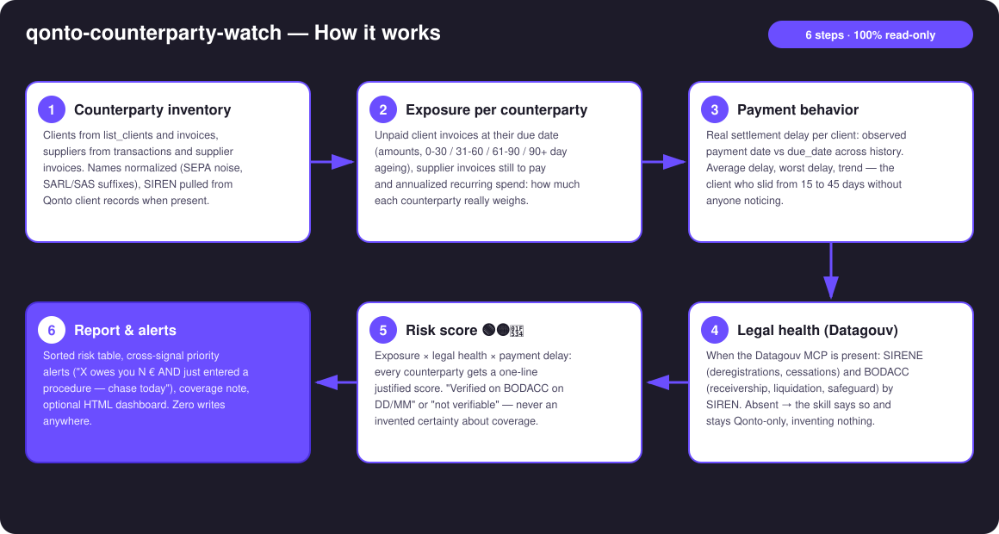
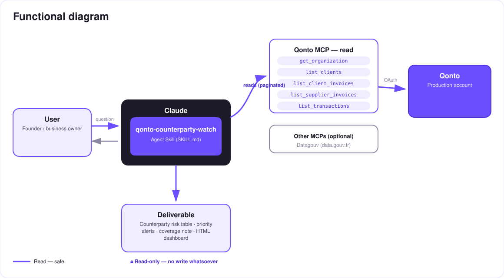

Know who owes you money… and who's sinking — a counterparty radar for your Qonto account.
An unpaid invoice hurts. An unpaid invoice from a client already in receivership may be gone forever — and nobody told you. The skill turns a Qonto account into a counterparty radar:
Unpaid client invoices (amounts, 0–30 / 31–60 / 61–90 / 90+ ageing), supplier commitments, annualized recurring spend.
Observed payment date vs due_date: average delay, worst delay, worsening trend per client.
SIRENE (deregistrations, cessations) + BODACC (receivership, liquidation, safeguard), dated — when the Datagouv MCP is present.
Exposure × legal health × delay → cross-signal alerts: "X owes you N € AND just entered a procedure — chase today".
Would someone run this on a Monday morning? That's exactly when you triage who to chase this week.
| Prerequisite | Detail | Required |
|---|---|---|
| Qonto production account | Adapts to any organization — get_organization first, nothing hardcoded | ✅ |
| Country | Legal health: France (SIRENE + BODACC). Other Qonto countries (DE, ES, IT…): graceful degradation — the Qonto-pure core (exposure + delays) works everywhere, no registry ever invented | ℹ️ detected |
| Qonto MCP connected | Official connector (claude.ai / Claude Desktop), OAuth login | ✅ |
| Datagouv MCP | Detected dynamically. Absent → the skill says so and delivers Qonto-only scoring | ⭕ recommended — activates legal health |
| Counterparty SIREN | Extracted from client records (tax_identification_number: a French VAT number embeds the SIREN) or exact legal name. No SIREN → "not verifiable", stated plainly | ⭕ |
| Invoice history | The more paid invoices, the more reliable each client's measured delay | ⭕ |


100% read-only, zero writes: the skill calls no Qonto write tool — nothing to approve, nothing to execute. It crosses two worlds that never talk to each other: your Qonto account (who owes you what) and the public registries (who is going under). Data flows out; nothing flows in.
| Score | Triggers | Alert example |
|---|---|---|
| 🔴 Critical | Open collective procedure or deregistration with money at stake; significant 90+ day overdue | "Owes €9,700, receivership published recently → declare the claim (2-month deadline) + registered-mail dunning" |
| 🟡 Watch | Worsening payment trend; high exposure not verifiable; procedure found with no current exposure | "Average delay slid from 12 to 38 days over the last 3 invoices" |
| 🟢 Healthy | Verified with no signal (dated) and payments on time | "✅ BODACC checked 11/07, nothing found · average delay 4 days" |
| Registry | Signal | Verdict on the line |
|---|---|---|
| SIRENE | Administrative status: active, ceased, deregistered | "Active as of DD/MM" / "Deregistered on DD/MM" — always dated |
| BODACC | Collective procedures: receivership, liquidation, safeguard (publication dates) | "Procedure published DD/MM" / "nothing found on DD/MM" / "not verifiable" |
| Output | Format | When |
|---|---|---|
| Conversation reply | Markdown tables (sorted risk table, alerts, coverage) | Always — the baseline |
| Interactive dashboard | HTML file/artifact: exposure × health matrix, ageing chart, alert cards | When the host renders files (claude.ai artifacts, Claude Desktop, Claude Code); automatic fallback to tables |
| Coverage note | Verified / not verifiable / registry unavailable counters | Every report — honesty is part of the deliverable |
The ≤ 3-minute demo attached to the PR walks through: the problem → the risk table on a real account → the cross-signal moment (a real overdue invoice meeting a BODACC procedure) → the final dashboard. It runs live on a real production account.
| Idea | Effort | Note |
|---|---|---|
| European registry modules (Handelsregister DE, Registro Mercantil ES…) | Medium | Qonto is pan-European; v1 = France, v2 = one registry module per country |
| Dunning-email draft when a Gmail MCP is detected (draft only, never auto-sent) | Low | Optional multi-MCP enrichment, in the spirit of the kickoff |
| Scan-over-scan diff ("new 🔴 since Monday") | Medium | The Monday ritual becomes a delta, not a full report |
| Supplier-dependency score (share of spend) | Low | Same inventory, highlights single-point-of-failure suppliers |